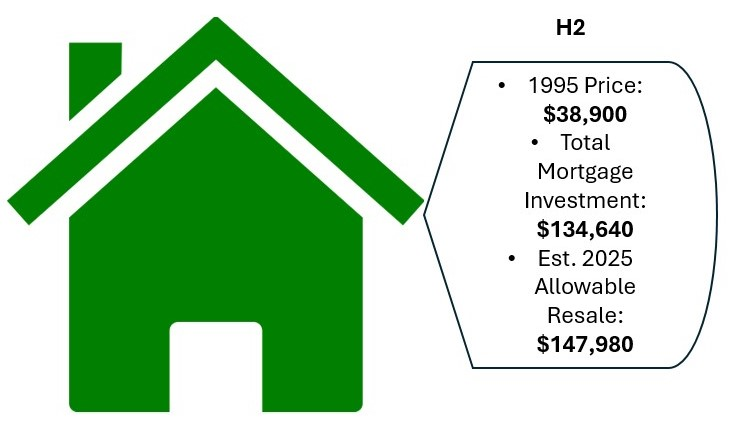
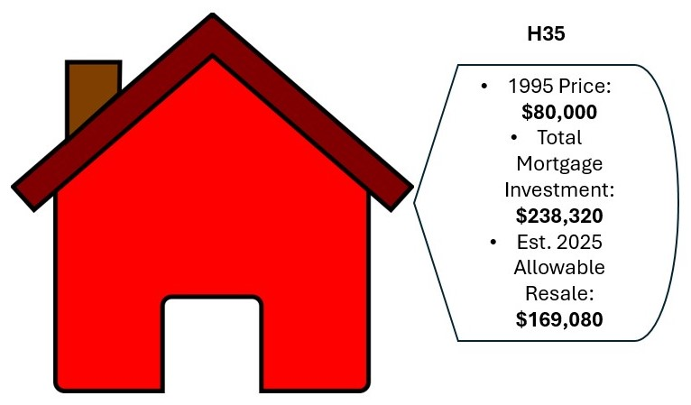

by George Zack and Priya Mester
Last updated on editor December 2, 2024
for Data Visualization for Allwith Prof. Jack DoughertyTrinity College, Hartford CT, USA
The American dream rests on the idea that low income and working class families have the opportunity to climb the economic ladder to success. Homeownership provides a stable stepping stone for families to turn that dream into a reality. If one were to examine two working class families, one that chose the rental option and one that chose ownership, their generation of wealth would be vastly different.
Let's travel back to the year 1995 to compare two working-class families in Hartford. One family rents a two-bedroom apartment that initially costs $450 per month but increases with inflation. A second family buys a home and makes mortgage payments that remain stable at $550 per month. Fast-forward 30 years later to 2025 and the homeowner has created wealth due to the equity in their home and also from tax benefits that they accrued due to mortgage deductions.
Community Land Trusts (CLTS), aim to aid people in entering and participating in this market through maintaining affordability, allowing them to generate wealth by growing their ownership over time. Community Land Trusts are nonprofits that purchase land and lease it back at a nominal rate. These trusts allow low to moderate income families to enter the market by buying the house while the land is owned by the CLT.
A good introduction raises your guiding question, outlines key findings that answer it, and explains why it matters to both our community partner. Since you also need to provide essential background information for general readers, a typical introduction requires at least 2-3 paragraphs.
Compose your data story in your Google Doc, where it's easier to write and edit, especially when working with other people. When you're ready, create your own copy of this GitHub dataviz-story-template , and publish it online using Settings > Pages. When your version is published, copy and paste the live web link into your README file so you can easily find it.
In your GitHub copy of this template, open the "index.html" file to see how everything must be written in HTML format. Click the pencil symbol in GithHub to edit the file. HINT: In the upper-right corner, switch the dropdown menu from "No Wrap" to "Soft Wrap" to easily view long segments of code in your screen.
Paragraphs like this one must begin with a "p" tag and end with a "p" closing tag.
Links must begin and end with "a" anchor tags, with the web address inside either single or double quotes. If you need guidance, check out this W3Schools HTML Tutorial.
Change default navigation labels (such as "Section 1") to customized labels to guide your readers. While some authors use traditional headers (such as "Findings" or "Sources & Methods"), you're welcome to innovate with more creative headers (such as "Why It Matters" or "How We Made This"). Be sure to EDIT names in TWO locations in the template: the Navigation Container (around lines 30-50) and the corresponding Sections labels further below. EDIT only the reader-friendly labels, and do not change the underlying code.
First, let’s get a concrete look at these houses in southern Hartford, and get an idea of their current market values. The map below separates the higher value homes and lower value homes, and centers on mean value homes. The more pronounced reds and oranges indicate the houses we are especially interested in studying, as they lie close to the median price of the south Hartford USA homes.
Map 1: Geographic location of USA homes in southern Hartford and their current values. Explore the map here.
The data regarding the value of single family USA homes in south Hartford tells us that a lot about home values. Over 85% of the USA homes in south Hartford fall within a range of $66,000, and the median falls right in the middle of this range. The histogram below in Chart 1 shows the distribution of home prices in Hartford. The results of this chart are encouraging, as it shows that many homes exist within the two buckets covering a range of $200k to $266k, and the median as referenced above sits at $233k, neatly in the middle of this range. This means data we find about median households within the is very likely to be applicable to much of the sample size, and more meaningful conclusions can be made.
Chart 1: USA Home prices in South Hartford are very consistent, and mostly fall very close to the median.
To put these homes into the context of the USA program itself, we need to estimate what the Allowable USA resale price for each of these homes would look like. However, this calculation relies on historical data that is not available for all the homes, so the dataset is smaller here. This is because calculating the allowable USA resale price requires the original purchase price of the home. From the sample of 41 homes in Chart 1, 30±2 year sale data was only available for 19. More details on this can be found in the methodology section.
Chart 2: The consistencies seen in Chart 1 are present here with USA resale prices, where 17 out of 19 resale values fall between $130,000 and $210,000.
We next need to look into whether or not owners of these homes are gaining wealth over time. To do this we mapped the data to show houses that showed the gains or losses a family might have made after fully paying off a 30 year mortgage with adjusted USA sale prices and allowable resale values. Below are two example homes from our sample in Chart 2: H2 and H35. H2’s sale price 30 years ago was $38,900. With some help from Zillow’s mortgage calculator, we estimated that over the course of a 30 year mortgage, this homeowner would have invested $134,640 into the home. The estimated current USA resale price for this home is $147,980. This means that if the owner sells the house right now, they would make $147,980 - $134,640 = $13,340 in additional profit. This homeowner would make 9.91% more than they invested. Over 30 years, this house has made them money.
Now let’s look at H35. The 1995 sale price was $80,000 and the estimated 30 year mortgage payments amount to $238,320. The estimated allowable USA resale price for this home is $169,080. This means that if sold now, the owner would make back $69,240 less than what they invested into the home, or a -29.05% return on investment. Over the 30 years of mortgage payments, the owner has gained complete ownership of the house, but will have to wait many more years before the house price appreciates enough for them to break even on the money they spent on the mortgage.
Let’s now apply this concept to the rest of the houses in the sample from Chart 2. In the map below the red arrows indicate a house that has invested more into the house than they can sell it for - like H35 - and the green arrows indicate houses that are more valuable than the 30 year mortgage investment - like H2. The results of this map tell us that the estimated investment put into that house; accumulated over a 30 year mortgage with a 20% down payment; generally outweighs the estimated USA resale value of the house. It is important to remember however, that as we have mentioned, homeownership in general is a better option than renting. Even though most of these USA homeowners will lose money if they sell the house immediately after paying off the 30 year mortgage, holding on to the house means they have ownership. This is something that can be passed on generationally and will generally continue to appreciate in value. Rental tenants cannot attain this.
Map 2: After a standard 30 year mortgage is paid off, USA homeowners are far more likely to have invested more money into the home than it is allowed to be resold for, with an average deficit of -17.78%. However, this deficit will decrease over time as each home is likely to appreciate in value over time, making net-positive wealth possible in the extended long-term. A good option for building generational wealth. Explore the map here.
The 1995 sale prices we found were based on Zillow.com's historical sale price data for each property. Data regarding the USA houses we found was provided to us privately by the Center for Leadership and Justice in Hartford. To select the 19 houses we studied for 30 year sale data, we expanded the acceptable historical year range to 1993-98 as there were simply too few properties that had sale prices precisely in 1995.
The allowable USA resale prices for each of these homes was calculated using the formula provided by USA on their resale procedure document. The formula we used is as follows:
2500(est. Cost of closing) + (current market value x 5.25% [est. agent commission based on national average]) + 500(USA transfer fee) + adjusted sales price = allowable USA resale price
More details about this formula can be found on the document itself. It is important to note that we omitted capital improvements in this calculation, which if applied would increase the resale value. Since we do not have access to the personal receipts of any improvements homeowners have made to these houses, our estimated resale prices are quite conservative in nature. The estimated monthly mortgage payments for each house was calculated using Zillow’s mortgage calculator, using the original 1995 purchase price with a 20% down payment.The total equity invested was then calculated using the monthly mortgage payment x 12 months x 30 years.
The wealth gained percentage was calculated by finding the percentage difference between the estimated investment and the estimated resale price.